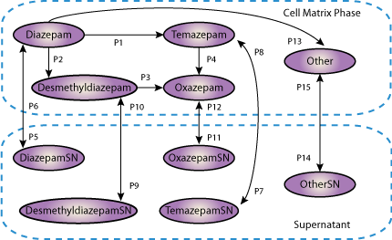

This CellML model runs in OpenCell and COR to reproduce published results
Drug biotransformation is one of the most important parameters of preclinical screening tests for the registration of new drug candidates. Conventional existing tests rely on nonhuman models which deliver an incomplete metabolic profile of drugs due to the lack of proper CYP450 expression as seen in human liver in vivo. In order to overcome this limitation, we used an organotypical model of human primary hepatocytes for the biotransformation of the drug diazepam with special reference to metabolites in both the cell matrix phase and supernatant and its interaction of three inducers (phenobarbital, dexamethasone, aroclor 1254) in different time responses (1, 2, 4, 8, 24 h). This model runs in OpenCell to reproduce the results in figure 3 of the published paper. There are four model versions: control (a), aroclor (b), dexamethasone (c) and phenobarbital (d). Initial values were taken from the published graphs.
The original paper reference is cited below:
'Two compartment model of diazepam biotransformation in an organotypical culture of primary human hepatocytes', Ali Acikgöz, Najibulla Karim, Shibashish Giri, Wolfgang Schmidt-Heck, Augustinus Bader, 2009 Toxicology and Applied Pharmacology, 234, 179-191. PubMed ID: 18983865
|  |
| Schemiatic diagram depicting the Acikgoz model |